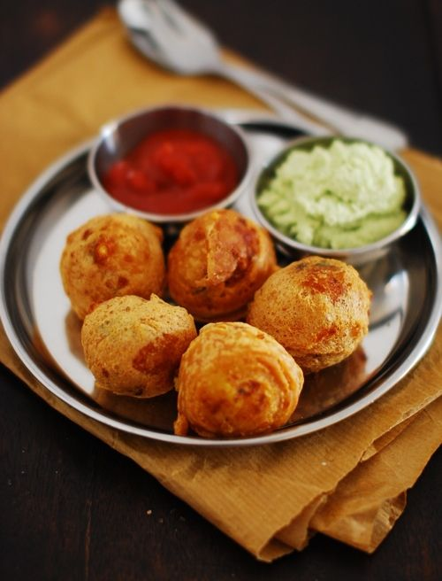

Aloo Bonda is a very popular evening snack recipe which is loved by kids and adults alike. It is also quite famous as a street food item, especially in South India. It is easy-to-make and is best enjoyed with chutney or sauce.

Ingredients
3 boiled,mashed,peeled potato
1/2 cup rice flour
2 medium finely chopped green chilli
1 teaspoon red chilli powder
1 cup refined oil
1 cup gram flour (besan)
1 teaspoon finely chopped ginger
1 cup finely chopped onion
1 tablespoon juice of 1 lemon
1 teaspoon salt
Method
Heat little oil in a pan over medium flame, once the oil is sufficiently hot, add onions in it, saute the onions till they turn slightly pinkish in hue.
Then add ginger and green chillies Saute the ginger till it is no more raw. Add salt and red chilli powder. Bring the flame to medium-high and keep stirring the mixture. Then add boiled potato and squeeze lemon juice over it. Mix well all the ingredients. Once done, remove from flame and keep aside to cool.
Then, mix the rice flour and gram flour in a glass bowl. Add enough water, salt and mix the ingredients properly so that a thick yet pourable batter is prepared. Once the potato filling is cool enough to handle, take portions of the potato mixture and make small balls of it.
Meanwhile, heat oil in a large frying pan over medium flame. Once the oil is sufficiently hot, dip the potato balls in the batter and carefully place into the hot oil. Deep fry the bondas until golden brown. Once done, remove and drain the excess oil. Serve this easy snack recipe with chutney or sauce.